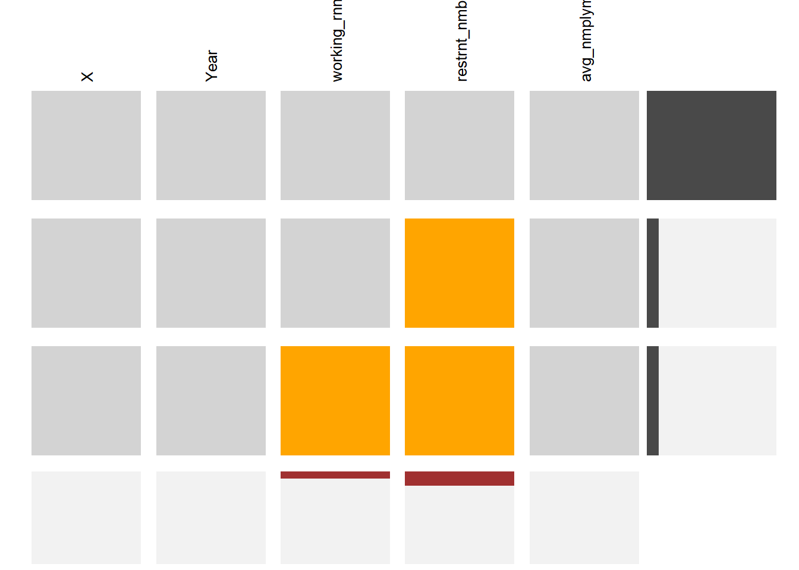
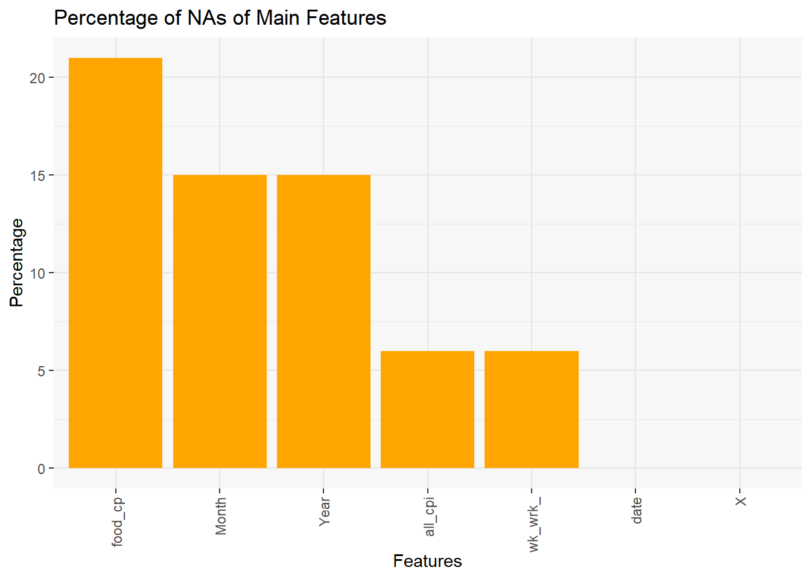
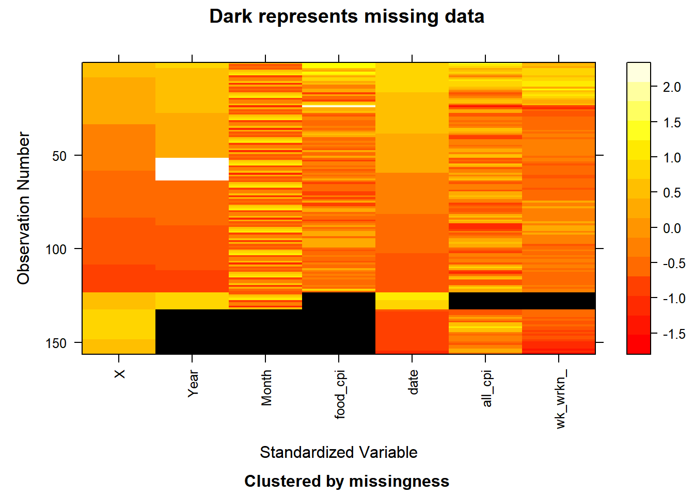

Chapter 4 Missing values
4.1 Data Source 1
After data cleaning in the last section, we end up with 8 datasets, two of which contain missing values.

For our data frame, this means: Variable working earnings have all their missing values at the end of my data frame. For variable restaurant numbers, the missing values are distributed at the end of the data frame and more than the variable working earnings. And for the upper part of this dataset have complete rows for the respective bin of data.
It is normal for the missing data to come from 2021 and 2022. Two of these data need to be calculated after a full year of statistics and our unemployment rate is calculated from the monthly data.
4.2 Data Source 2
## NOTE: The following pairs of variables appear to have the same missingness pattern.
## Please verify whether they are in fact logically distinct variables.
## [,1] [,2]
## [1,] "Year" "Month"
## [2,] "all_cpi" "week_working_hour"

The two plots show that “food_cpi” has the highest number of missing values, month and year, and “all_cpi” and “week_working hour” have the same missing value pattern and percentage.
For “food_cpi”, it is missing data for the years 2010, 2011, and the second half of 2022. As for the variables “Year” and “Month”, the data are missing due to data joining during the data cleaning phase.